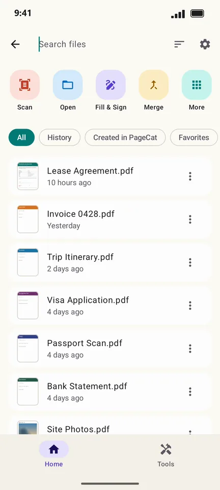
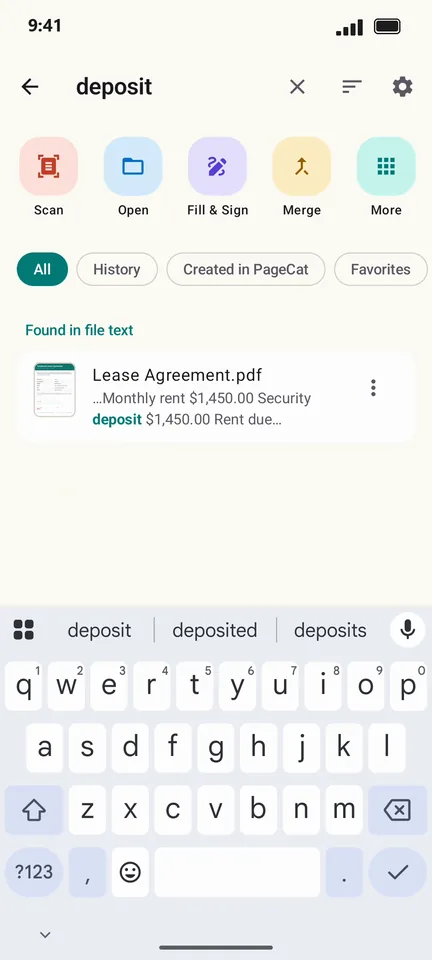

How to find a PDF by a word inside it on Android
You remember what the document said, not what the file was called. PageCat searches the text on the first pages of the PDFs on your phone, so typing "deposit" finds the lease even if it is named scan_0042.pdf.
Steps
On the Home screen, tap Search files.

Type a word. Matches inside files appear under Found in file text, with the line that matched.

Tap the result to open it.

Good to know
- PageCat reads the first two pages of each PDF, where titles, names and amounts usually are. The first search reads your files once; after that it is quick.
- Scanned PDFs have no text yet: tap Scan them too when PageCat offers, or run OCR on them.
Questions
Does PageCat upload my files to search them?
No. The search index is built and kept on your phone.